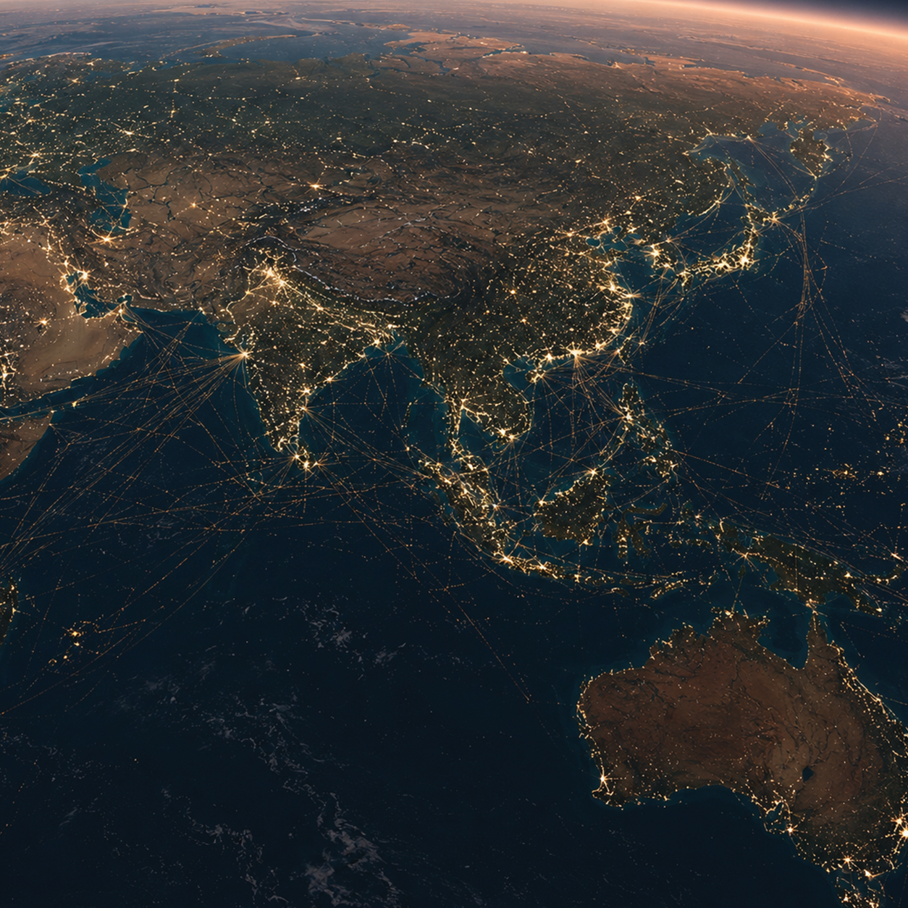

+7
From this scale, individual countries begin to dissolve into a continuous global system of movement and exchange. Dense shipping routes crisscross the oceans, with cargo vessels forming permanent pathways between continents—far more intensive and coordinated than in 1977 due to globalised production and trade networks. Beneath the surface, undersea fibre-optic cables link almost every region, carrying the vast majority of international communication in real time, something that didn’t exist in the original “Powers of Ten” worldview. Above, international flight density is significantly higher, with constant air traffic connecting global hubs in tightly scheduled networks. Compared to 1977, supply chains are now deeply interdependent—materials, manufacturing, and distribution spread across multiple countries—meaning everyday objects are no longer local products, but the result of tightly integrated global systems.